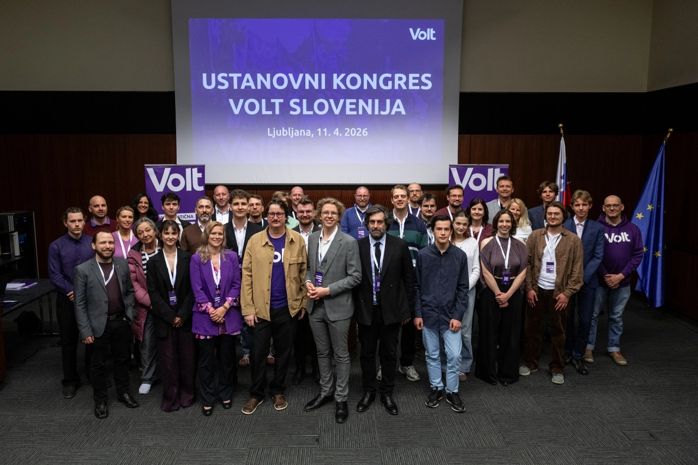
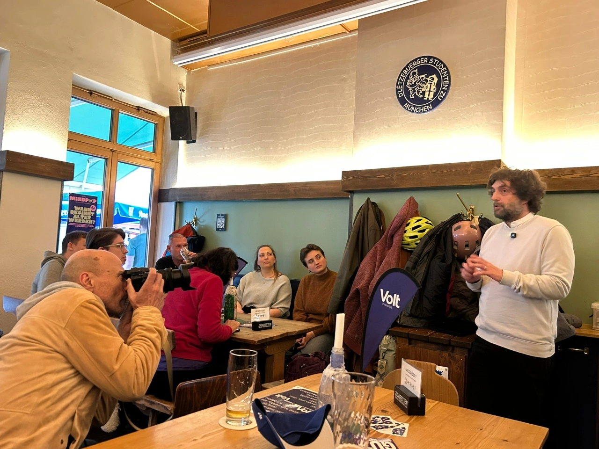
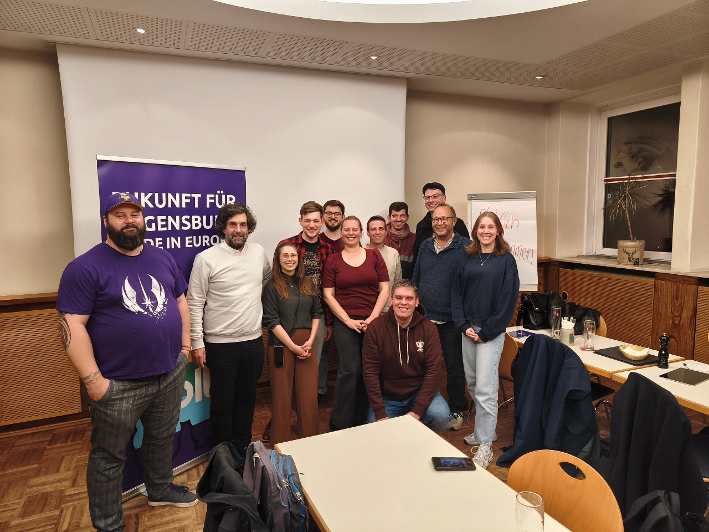
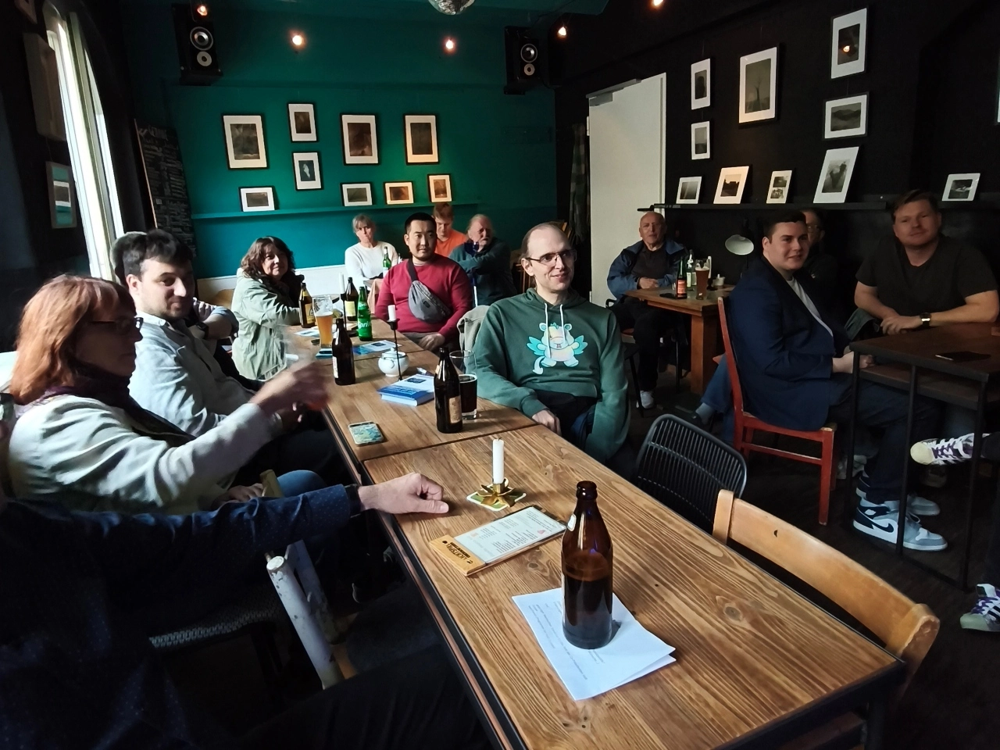
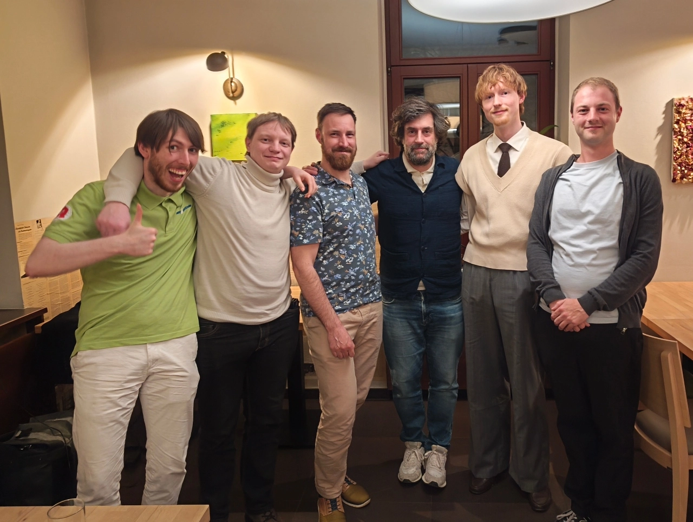
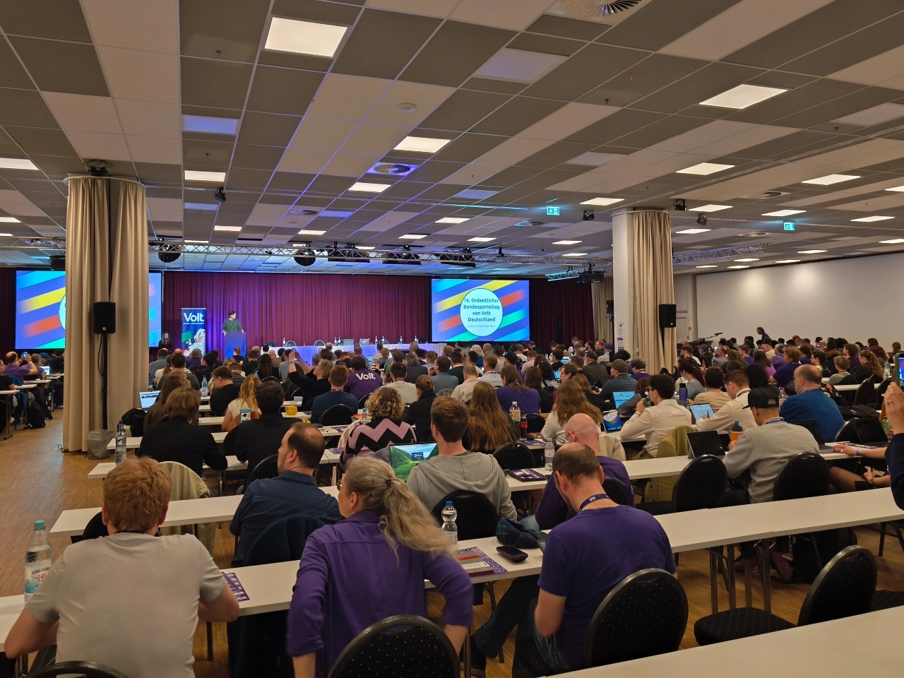

Eine transnationale Kampagne: Kickoff (#3)

Auf meiner transnationalen Listening Tour ging es als Nächstes in die Heimat. In meinem Newsletter schreibe ich über die politische Situation in den Ländern, die ich besuche, was unsere Volt teams machen und was sie sich vom nächsten Europäischen Board erwarten. Mehr über mein Programm findest Du auf meiner Website. Dort steht auch ein wenig mehr über mich und mein Programme.
Geschichten von der transnationalen Tour: Zu Hause

Ljubljana, Slowenien 🇸🇮

Es war keine echte Wahlkampfveranstaltung, aber Mitte April hielten wir die Gründungsversammlung von Volt Slowenien ab. Dies war neben der Ausarbeitung einer Satzung, eines ordnungsgemäßen Programms und der Sammlung von 200 Unterschriften von Gründungsmitgliedern, die ihre Unterschrift im Rathaus beglaubigen lassen mussten, die letzte Anforderung für die Registrierung einer politischen Partei in Slowenien.
Wir haben vor etwa einem Jahr mit einer Handvoll Mitgliedern angefangen und konnten durch regelmäßige Newsletter, Social Media und Meet&Greets schnell wachsen. Ich habe auch genetzwerkt – mit politischen Bloggern, PR-Berater, ehemaligen Kommissare und vielen Personen, die uns auf unserem Weg helfen könnten. Außerdem nahm ich an pro-europäischen Veranstaltung teil und stellte dort stets eine Frage im Namen von Volt, weil auch so findet man schnell Mitglieder und wichtige Kontakte. Wir waren mehrfach in den lokalen und nationalen Medien, und das nationale Fernsehen war auch bei unserer Generalversammlung anwesend (siehe meinen 30-Sekunden-Beitrag in den Abendnachrichten)
Inzwischen haben wir die Bestätigung vom Innenministerium, dass die Parteigründung in Ordnung ist. Ich bin froh, dass wir das geschafft haben, bevor die neue rechtskonservative Regierung ihr Amt antritt – sie hätte uns das Leben sicherlich schwerer gemacht. Nächster Schritt für Volt Slovenija: Vorbereitung auf Kommunalwahlen und eventuelle vorgezogene Parlamentswahlen - also mehr Networking, um potenzielle Mitglieder und zukünftige Kandidaten zu finden.
München, Deutschland 🇩🇪

München ist meine erste Station, wenn ich von Ljubljana aus nach Norden reise. Das Team vor Ort war so freundlich, ein Meet&Greet für mich zu organisieren, bei dem ich über „Europa und Lederhosen“ sprach – in Anspielung auf den konservativen CSU-Slogan aus den 90er Jahren, wonach Bayern gleichzeitig eine Hightech- und eine traditionsreiche Region sei. Für mich stellte sich die Frage, ob das auch auf Europa zutrifft: Denn der deutsche Bundeskanzler von der konservativen CDU behauptet oft, ein stärkeres Europa zu wollen, tut aber in Wirklichkeit genau das Gegenteil.
Das passte gut zu meinem Vorhaben, Volt Europa zu einer Plattform für europäische politische Führung zu machen. Wir brauchen politisches Gewicht, um Staatschefs, die von einem starken Europa "in Name only" sprechen, zur Verantwortung ziehen zu können. Das können nationale Chapters nicht alleine schaffen, es erfordert gemeinsame Kommunikation und ein Gegengewicht zu den nationalen Staatschefs.
Dieses Gewicht entsteht nicht von selbst. Es erfordert ein politisches Netzwerk, das ich seit über einem Jahr aufbaue, sowie ausreichende Unterstützung in der Bevölkerung. Deshalb ist der wichtigste Vorschlag, den ich diskutieren wollte, die Nutzung europäischer Bürgerinitiativen (ECIs) als Druckmittel, indem wir eine Mailingliste mit über 1 Million Unterstützern aufbauen und dann massenhaft ECIs einreichen. Das wird unseren Europaabgeordneten das Äquivalent einer Gesetzesinitiative verschaffen. Wir können Punkte aus unserem Moonshot-Programm auf die Gesetzes-Agenda setzen. Und wir können unser Wählpotenzial über zwei Jahre hinweg aufbauen, um Sperrklauseln zu überwinden.
In der anschließenden Diskussion zeigten sich die anwesenden Mitglieder sehr offen für diesen basisorientierten Ansatz zur Steigerung der Wahlchancen. Ich erhielt viele gute Anregungen zur Feinabstimmung meiner Messages und freute mich über den positiven Empfang bei meinem ersten Wahlkampfauftritt in Deutschland – an dem auch Volters aus Bayreuth und sogar aus Slowenien teilnahmen.
Regensburg, Deutschland 🇩🇪

Als Nächstes stand Regensburg auf meiner Route, wo ich 2001 mein Studium der Betriebswirtschaftslehre abgeschlossen hatte und seitdem nicht mehr gewesen bin. Ich kam mit genügend Zeit für einen Stadtbummel an, und habe mich ein bisschen von den Erinnergungen mitreißen lassen und beinahe den Beginn des Meet&Greets verpasst, wo man mich schon erwartete.
Im Vergleich zu München war dies ein eher informelles Treffen, also begannen wir einfach, über Volt, den jüngsten lokalen Wahlkampf und die Koalitionsverhandlungen zu diskutieren und darüber, wie sehr lokale Teams davon profitieren würden, wenn die nationale oder europäische Parteiführung in den deutschen nationalen Medien präsenter wäre. Das ist ein häufiger Wunsch in allen Ländern und zeigt, warum unser Ansatz, Volt Europa auf administrative Arbeit zu beschränken, unser Potenzial einschränkt.
Ich beschrieb erneut meine konkreten Ziele und meine Absicht, Volt von einer Partei, die nur darüber spricht, „was“ wir wollen, zu einer Partei zu machen, die den Status quo in Frage stellt, indem sie aufzeigt, „wie“ wir Europa und die europäische Politik tatsächlich gestalten können. Wie schon am Tag zuvor hatte ich das Gefühl, dass dies eine willkommene Veränderung der Denkweise und eine notwendige Neuausrichtung ist, um unsere Basis und unsere Bottom-up-Politik wiederzubeleben.
Wir diskutierten bis zum Feierabend des Restaurants, und ich war superhappy, erneut viel Unterstützung für meine Ideen erhalten zu haben und den Wunsch, Volt Europa „vor Ort“ in der nationalen und sogar lokalen Politik sichtbar zu machen.
Ein großes Dankeschön für den Empfang, und beim nächsten Mal mache ich beim „Schnitzel-All-you-can-eat“ mit 😊
Bamberg, Germany 🇩🇪

Als Nächstes stand ein Besuch in Bamberg auf dem Programm, wo das lokale Team einen Abend mit gewählten Vertretern und Mitgliedern der lokalen Teams aus der Region organisierte. Wir waren bereits während der Europawahlen im lokalen Fernsehen, und es war toll, dass es Hans-Günther Brünker wieder gelang, das lokale Fernsehen zu einem Interview mit mir über die Wahlen zum Co-Vorsitz von Volt Europa zu organisieren. Das Interview ist hier zu sehen.
An diesem Abend stand ich nicht allein anderen auf der Bühne: wir diskutierten die politische Lage in unseren jeweiligen Gemeinden – wobei ich meine Erfahrungen als lokaler Kandidat in Lille einbrachte und nun dem Team bei der Vorbereitung der Kommunalwahlen in Ljubljana helfe. Es ist interessant, die Herausforderungen und Gemeinsamkeiten zu vergleichen und zu sehen, wie bewährte Praktiken eines lokalen Teams anderswo wirklich helfen könnten, vorausgesetzt, es gäbe mehr Möglichkeiten zur Vernetzung. Das war eine meiner wichtigsten Erkenntnisse des Abends: Die Ortsgruppen haben kaum Mittel, um mit weiter entfernten lokalen Teams und insbesondere mit solchen im Ausland in Kontakt zu treten. Das europäische Projekt basiert auf grenzüberschreitender Vernetzung, und was für Unternehmen gilt, sollte für Volt und unser Netzwerk ebenso Priorität haben: Je mehr Volt Europa dabei hilft, Verbindungen herzustellen, desto stärker werden wir werden.
Wie schon bei meinen früheren Besuchen fanden konkrete Projekte, die von Volt Europa organisiert und auf lokaler Ebene umgesetzt wurden – idealerweise als „Kit“, den Teams bestellen und direkt umsetzen können –, großen Anklang. Was uns heute fehlt, sind die Stories und Projekte, mit denen man Bürger wieder für Europa begeistern kann. Wir müssen unsere lokalen Teams viel stärker unterstützen, indem wir ihnen Kontakte und Werkzeuge zur Verfügung stellen, anstatt sie mit Bürokrati zu überfrachten.
Ein großes Dankeschön an alle, die an der Durchführung dieser Veranstaltung beteiligt waren, und an alle lokalen Amtsträger, die sich die Zeit genommen haben, mich in Bamberg zu begleiten. Ich nahm den letzten Zug zurück in meine Heimatstadt, um einen Abend mit meiner Mutter zu verbringen, bevor ich mich auf den Weg nach Dresden machte.
Dresden, Germany 🇩🇪

Meine letzte Station vor Berlin war Dresden – nicht ganz einfach zu erreichen, da ich von einem Regionalzug in den nächsten umsteigen musste, und ich hatte auch nur Zeit für ein Abendessen, wenn ich rechtzeitig zur Generalversammlung von Volt Deutschland am nächsten Morgen in Berlin sein wollte.
Wir waren eine kleine Gruppe, aber alle sehr daran interessiert, uns zu treffen, denn es kommt nicht oft vor, dass ein Kandidat für den Europäischen Vorstand zu Besuch kommt – schade, denn Dresden ist eine wunderschöne Stadt, und da die extreme Rechte in diesen Teilen Deutschlands in den Umfragen mit großem Vorsprung führt, ist es auch ein Ort in Europa, an dem über die Zukunft der Demokratie entschieden wird. Wir sollten hier stärker präsent sein! Ich habe erfahren, wie Volt versucht, eine positive Narrative zu vermitteln, und wie schwierig es ist, eine pro-europäische Alternative zur Alternative für Deutschland zu präsentieren.
Wir haben an diesem Abend ziemlich viele Themen untergebracht; ich konnte meine Ideen für die Co-Präsidentschaft vorstellen und diskutieren, wie diese für lokale Teams einen Unterschied machen könnten, sowie Volts anhaltende Abhängigkeit von nicht-europäischen Technologieanbietern und Social-Media-Plattformen – da ich ein auch ein Mastodon-Nutzer bin.
Da es nach dem Abendessen keine Möglichkeit gab, von Dresden nach Berlin zu kommen, musste ich zum Flixbus joggen, der mich nach 1 Uhr morgens am Alexanderplatz absetzte. Um 2 Uhr morgens kam ich in meinem Hotelzimmer an, um ein paar Stunden Schlaf zu bekommen, bevor die Generalversammlung beginnen würde.
Berlin, Germany 🇩🇪

Ich war in den letzten Tagen ziemlich angeschlagen und habe viel Zeit an der Bar verbracht … beim Tee getrunken, um nicht krank zu werden. Ich gehörte zu einer Gruppe internationaler Volter, die von Volt Deutschland eingeladen worden waren, um der Generalversammlung einen internationaleren Touch zu verleihen. Die Generalversammlung ist sehr verfahrenstechnisch, also haben wir alle einen Großteil des Vormittagsprogramms verfolgt, bevor wir unsere Aufgabe für das Wochenende in Angriff nahmen: den Austausch mit den deutschen Mitgliedern.
Als Kandidat für den Vorstand – wie viele der anderen internationalen Mitglieder – war dies eine großartige Gelegenheit, und ich habe das Gefühl, dass die meisten von uns Anwesenden sie gut genutzt haben, um Ideen zu präsentieren und zu diskutieren, auch untereinander, sowie unsere unterschiedlichen Visionen davon, was Volt Europa tun muss, um einen weiteren Schritt nach vorne zu machen. Das ging bis weit in den Abend hinein, aber nach unserem gemeinsamen Abendessen und einem Spaghetti-Eis, das ich seit über Jahren nicht mehr gegessen hatte, machte ich Feierabend, um etwas Schlaf nachzuholen.
Der Sonntag verlief ähnlich, und bei unserem Abschlussessen fanden viele von uns, dass es eine großartige Idee und Gelegenheit war, die Volt Deutschland geboten hatte, um Volt Europa seinen deutschen Mitgliedern näherzubringen – einer meiner Gründe für meine Tour. Da unsere Wahlkommission jedoch inzwischen festgelegt hatte, dass vor dem Wahlkampfstart am 1. Mai keine Wahlkampfaktivitäten stattfinden dürfen, beschloss ich, meine Tour und alle Wahlkampfaktivitäten bis dahin einzustellen – und kehrte nach Ljubljana zurück, um stillzusitzen und meine Termine in Italien, Malta und Teilen Frankreichs abzusagen. Ich hatte alle Tickets gebucht, daher war das auch ein ziemlicher Dämpfer, aber Regeln sind Regeln.
Mein Plan war nun, den eigentlichen Startschuss am 1. Mai in Lille beim Suppenfestival zu geben.
Bleibt dran, um zu erfahren, wie es gelaufen ist. Vielen Dank fürs Lesen und für die Unterstützung meiner Kampagne.
Lila Grüße,
Sven